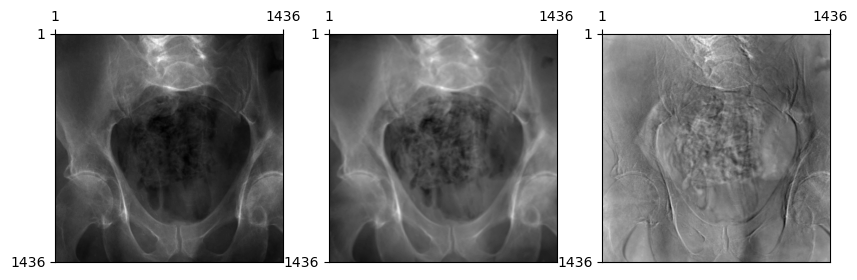
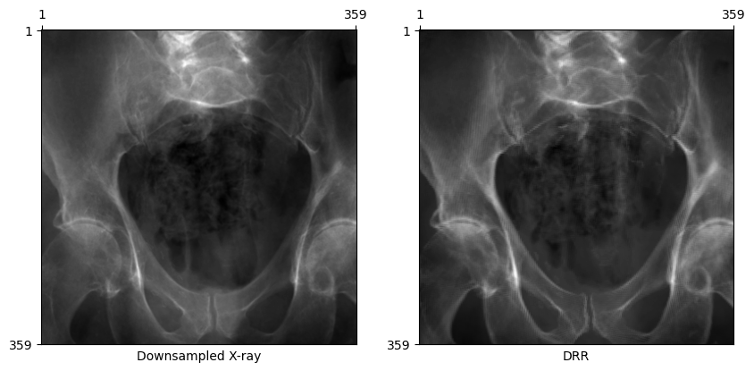
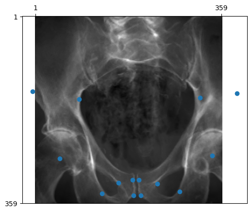

import matplotlib.pyplot as plt
from diffdrr.drr import DRR
from diffdrr.visualization import plot_drrdeepfluoro
DiffDRR wrapper for the DeepFluoro dataset
Dataset
The DeepFluoro dataset is a collection of pelvic CT and X-ray images from 6 cadaveric subjects from Johns Hopkins University. For each subject, there is
- One 3D CT volume
- One 3D labelmap for the CT
- Between 24-111 2D X-ray fluoroscopy images, depending on the subject
In total, the dataset comprises six CT volumes and 366 X-ray images (with ground truth camera poses).
DeepFluoroDataset
DeepFluoroDataset (id_number:int, preprocess:bool=True, bone_attenuation_multiplier:float=1.0, labels:int|list=None, batchless:bool=False)
A torch.utils.data.Dataset that stores the imaging data for subjects in the DeepFluoro dataset and provides an iterator over the X-ray fluoroscopy images and associated poses for each subject. Imaging data can be passed to a diffdrr.drr.DRR to renderer DRRs from ground truth camera poses.
| Type | Default | Details | |
|---|---|---|---|
| id_number | int | Subject ID in {1, …, 6} | |
| preprocess | bool | True | Convert X-rays from exponentiated to linear form |
| bone_attenuation_multiplier | float | 1.0 | Scalar multiplier on density of high attenuation voxels (from DiffDRR, see here) |
| labels | int | list | None | Labels from the mask of structures to render |
| batchless | bool | False | Return unbatched images and poses (e.g., to interface with a torch.utils.data.DataLoader) |
Note
DeepFluoroDataset.__getitem__ returns a real X-ray image and its associated ground-truth camera pose. This pose is a diffdrr.pose.RigidTransform object that can be passed directly to the renderer.
preprocess
preprocess (img, initial_energy=tensor(65487.))
Convert X-ray fluoroscopy from the exponentiated form to the linear form.
If the preprocess flag is True, the DeepFluoroDataset will convert raw X-ray fluoroscopy images from their exponentated form to a linear form by recovering the line integral
\[L[i,j] = \log I_0 - \log I_f[i,j]\]
using the following steps:
- Remove edge induced by the collimator
- Smooth the image to make less noisy
- Subtract the log initial energy for each ray
The ray’s initial energy was estimated by taking the max over all images in the DeepFluoro dataset.
Transforms
Transforms (height:int, eps:float=1e-06)
Standardize, resize, and normalize X-rays and DRRs before inputting to a deep learning model.
We transform X-rays and DRRs before inputting them to a deep learning model by
- Rescaling pixel values to [0, 1]
- Resizing the images to a specified size
- Normalizing pixel values by the dataset mean and standard deviation
Basic functionalities
Initializing a DeepFluoroDataset returns an object containing a torchio.Subject that directly interfaces with the diffdrr.drr.DRR module. Intrinsic parameters (i.e., the imaging system’s focal length, image dimensions, pixel spacings, and principal offsets) are also returned.
Tip
X-rays in the DeepFluoro dataset are 1536 × 1536 (before preprocessing) with an isotropic pixel spacing of 0.194 mm. To render such large X-rays with a single GPU, we can use the patch_size argument in DiffDRR.
# Load a subject from the DeepFluoroDataset WITHOUT preprocessing (non-default)
deepfluoro = DeepFluoroDataset(id_number=1, preprocess=False)
# Initialize the DRR module
drr = DRR(
deepfluoro.subject,
deepfluoro.focal_len,
deepfluoro.height,
deepfluoro.delx,
x0=deepfluoro.x0,
y0=deepfluoro.y0,
reverse_x_axis=True,
patch_size=deepfluoro.height // 4,
).cuda()
transform = Transforms(deepfluoro.height)
# Render a DRR from the ground truth camera pose
gt, pose = deepfluoro[0]
img = drr(pose.cuda()).cpu()
gt, img = transform(gt), transform(img)
plot_drr(torch.concat([gt, img]), title=["Raw X-ray", "DRR"])
plt.show()Preprocessing X-rays
DiffDRR computes the line integral of an X-ray traced over a CT volume. However, X-rays in the DeepFluoro dataset come in the exponentiated form. To convert raw X-rays to a linear form such that they look like our DRRs, we need to
- Crop 50 pixels off each edge to remove the effects of the collimator
- Invert the imaging equation to recover the line integral radiograph
From the Beer-Lambert Law, the equation governing fluoroscopy images is \[ I_f[i, j] = I_0 \exp(-L[i, j]) \,, \] where \(L[i, j]\) is the line integral of an X-ray through the volume. Inverting this, we recover \[ L[i, j] = \log I_0 - \log I_f[i, j] \,.\] where the constant \(I_0\) for each image represents the initial energy of each ray. We approximate \(I_0 = \max_{i,j} I_f[i,j]\), assuming that this represents a ray that reached the detector plane without first intersecting the volume.
Code
# Load a subject from the DeepFluoroDataset WITH preprocessing
deepfluoro = DeepFluoroDataset(id_number=1)
# Initialize the DRR module
drr = DRR(
deepfluoro.subject,
deepfluoro.focal_len,
deepfluoro.height,
deepfluoro.delx,
x0=deepfluoro.x0,
y0=deepfluoro.y0,
patch_size=deepfluoro.height // 4,
).cuda()
transform = Transforms(deepfluoro.height)
# Render a DRR from the ground truth camera pose
gt, pose = deepfluoro[0]
img = drr(pose.cuda()).cpu()
gt, img = transform(gt), transform(img)
plot_drr(torch.concat([gt, img, gt - img]))
plt.show()
Changing bone attenuation for DRRs
We can preprocess the CT by segmenting air, soft tissue, and bone before generating DRRs.
- Using
bone_attenuation_multiplier=1.0(default) sets the value of air voxels to 0 - Increasing
bone_attenuation_multiplierweights the density of bones higher than that of soft tissue (i.e., increases contrast in the DRR)
Tip
bone_attenuation_multiplier between [1.0, 3.0] seems to work well for most images in this dataset.
Code
# Load a subject from the DeepFluoroDataset WITH preprocessing
deepfluoro = DeepFluoroDataset(id_number=1, bone_attenuation_multiplier=2.5)
# Initialize the DRR module
drr = DRR(
deepfluoro.subject,
deepfluoro.focal_len,
deepfluoro.height,
deepfluoro.delx,
x0=deepfluoro.x0,
y0=deepfluoro.y0,
patch_size=deepfluoro.height // 4,
).cuda()
transform = Transforms(deepfluoro.height)
# Render a DRR from the ground truth camera pose
gt, pose = deepfluoro[0]
img = drr(pose.cuda()).cpu()
gt, img = transform(gt), transform(img)
plot_drr(torch.concat([gt, img]), title=["Processed X-ray", "DRR"])
plt.show()Now, DRRs generated from the ground truth C-arm pose looks remarkably similar to the real X-ray!
Rotated X-ray test
Caution
Some X-ray images in the dataset are rotated 180 degrees in-plane. If the X-ray and DRR below are both in the standard orientation, this error in the dataset has been handled properly by the DeepFluoroDataset class.
Code
# Get an example where the image and pose are rotated
gt, pose = deepfluoro[34]
img = drr(pose.cuda()).cpu()
gt, img = transform(gt), transform(img)
plot_drr(torch.concat([gt, img]), title=["Processed X-ray", "DRR"])
plt.show()Rendering smaller X-rays
Rendering such large X-rays is prohibitively slow for online training and optimization schemes. For these purposes, we can simply downsample the X-rays and associated imaging planes we use to render DRRs.
# Specify a subsampling factor
subsample = 4
# Load a subject from the DeepFluoroDataset
deepfluoro = DeepFluoroDataset(id_number=1, bone_attenuation_multiplier=2.5)
# Initialize the DRR module WITH subsampling
drr = DRR(
deepfluoro.subject,
deepfluoro.focal_len,
deepfluoro.height // subsample,
deepfluoro.delx * subsample,
x0=deepfluoro.x0,
y0=deepfluoro.y0,
).cuda()
transform = Transforms(deepfluoro.height // subsample)
# Render a DRR from the ground truth camera pose
gt, pose = deepfluoro[0]
img = drr(pose.cuda()).cpu()
gt, img = transform(gt), transform(img)
plot_drr(torch.concat([gt, img]), title=["Downsampled X-ray", "DRR"])
plt.show()
Projecting fiducial markers
In the DeepFluoro dataset, 3D fiducial markers were digitally placed in the preoperative CT. Projecting these markers into 2D using ground truth and estimated camera matrices can be used to calculate mean Reprojection Error (mRPE), a common evaluation metric for 2D/3D registration.
Note
The output of drr.perspective_projection is in units of pixels and the system’s intrinsic matrix is automatically determined from the intrinsic parameters passed to the diffdrr.drr.DRR constructor.
x = drr.perspective_projection(pose, deepfluoro.subject.fiducials.cuda()).cpu()
plot_drr(img)
plt.scatter(x[0, ..., 0], x[0, ..., 1])
plt.show()
Rendering specific structures
Render a specific subset of anatomical structures using a list of labels. For example, to only render the pelvis and spine, use labels=[1, 2, 3, 4, 7].
# Load a subject from the DeepFluoroDataset
deepfluoro = DeepFluoroDataset(id_number=1, bone_attenuation_multiplier=2.5, labels=[1, 2, 3, 4, 7])
print(deepfluoro.subject.label_def)
# Initialize the DRR module WITH subsampling
drr = DRR(
deepfluoro.subject,
deepfluoro.focal_len,
deepfluoro.height // subsample,
deepfluoro.delx * subsample,
x0=deepfluoro.x0,
y0=deepfluoro.y0,
).cuda()
transform = Transforms(deepfluoro.height // subsample)
# Render a DRR from the ground truth camera pose
gt, pose = deepfluoro[0]
img = drr(pose.cuda()).cpu()
gt, img = transform(gt), transform(img)
plot_drr(torch.concat([gt, img]), title=["Downsampled X-ray", "DRR"])
plt.show(){1: 'left-hemipelvis', 2: 'right-hemipelvis', 3: 'vertebrae', 4: 'upper-sacrum', 5: 'left-femur', 6: 'right-femur', 7: 'lower-sacrum'}Visualizing camera poses in 3D
We can use 3D plotting functions from PyVista available in DiffDRR to visualize the distributions of camera poses for the six subjects and 366 X-rays in the DeepFluoro dataset.
import pyvista
from IPython.display import IFrame
from tqdm import tqdm
from diffdrr.visualization import _make_camera_frustum_mesh, labelmap_to_mesh
pyvista.start_xvfb()Code
plotter = pyvista.Plotter()
colors = ["#66c2a5", "#fc8d62", "#8da0cb", "#e78ac3", "#a6d854", "#ffd92f"]
for idx in range(1, 7):
deepfluoro = DeepFluoroDataset(idx)
drr = DRR(
deepfluoro.subject,
deepfluoro.focal_len,
deepfluoro.height // 8,
deepfluoro.delx * 8,
x0=deepfluoro.x0,
y0=deepfluoro.y0,
)
if idx == 1:
ct = labelmap_to_mesh(deepfluoro.subject)
ct.clear_cell_data()
plotter.add_mesh(ct)
for img, pose in tqdm(deepfluoro, desc=f"Subject {idx}"):
source, target = drr.detector(pose, None)
source = source.squeeze().cpu().detach().numpy()
target = (
target.reshape(drr.detector.height, drr.detector.width, 3)
.cpu()
.detach()
.numpy()
)
principal_ray = pyvista.Line(source, target.mean(axis=0).mean(axis=0))
camera = _make_camera_frustum_mesh(source, target, size=0.05)
plotter.add_mesh(camera, show_edges=True, color=colors[idx - 1])
plotter.add_mesh(principal_ray, line_width=3, color=colors[idx - 1])
plotter.export_html("deepfluoro_camera_poses.html")Performing Labeled Surface Extraction: 100%|█████████████████████████████████████████████████████████████████████████████████████████████████████████████████████████████████████████████████████████████████████████████████████[00:00<00:00]
Smoothing Mesh using Taubin Smoothing: 100%|█████████████████████████████████████████████████████████████████████████████████████████████████████████████████████████████████████████████████████████████████████████████████████[00:01<00:00]
Cleaning: 100%|██████████████████████████████████████████████████████████████████████████████████████████████████████████████████████████████████████████████████████████████████████████████████████████████████████████████████[00:00<00:00]
Subject 1: 100%|████████████████████████████████████████████████████████████████████████████████████████████████████████████████████████████████████████████████████████████████████████████████████████████| 111/111 [00:11<00:00, 9.52it/s]
Subject 2: 100%|████████████████████████████████████████████████████████████████████████████████████████████████████████████████████████████████████████████████████████████████████████████████████████████| 104/104 [00:11<00:00, 9.31it/s]
Subject 3: 100%|██████████████████████████████████████████████████████████████████████████████████████████████████████████████████████████████████████████████████████████████████████████████████████████████| 24/24 [00:02<00:00, 9.47it/s]
Subject 4: 100%|██████████████████████████████████████████████████████████████████████████████████████████████████████████████████████████████████████████████████████████████████████████████████████████████| 48/48 [00:05<00:00, 9.35it/s]
Subject 5: 100%|██████████████████████████████████████████████████████████████████████████████████████████████████████████████████████████████████████████████████████████████████████████████████████████████| 55/55 [00:05<00:00, 9.31it/s]
Subject 6: 100%|██████████████████████████████████████████████████████████████████████████████████████████████████████████████████████████████████████████████████████████████████████████████████████████████| 24/24 [00:02<00:00, 9.56it/s]In this rendering, each rectangular frustum corresponds to the viewing angle for a particular X-ray and each color represents a different subject. For clarity, only the pelvis of the first subject is visualized.
IFrame("deepfluoro_camera_poses.html", height=500, width=749)Citations
Note
The DeepFluoro dataset and its DiffDRR wrapper contain many other interesting features that are not covered in this tutorial (e.g., 2D and 3D labelmaps for X-ray and CT images). For a complete overview of the data and features available in DeepFluoro, please check out the original repository.
If you use the DeepFluoro dataset in your work, please cite the authors’ original publication:
@article{grupp2020automatic,
title={Automatic annotation of hip anatomy in fluoroscopy for robust and efficient 2D/3D registration},
author={Grupp, Robert B and Unberath, Mathias and Gao, Cong and Hegeman, Rachel A and Murphy, Ryan J and Alexander, Clayton P and Otake, Yoshito and McArthur, Benjamin A and Armand, Mehran and Taylor, Russell H},
journal={International journal of computer assisted radiology and surgery},
volume={15},
pages={759--769},
year={2020},
publisher={Springer}
}If you find DiffDRR or DiffDRR-Datasets useful for your work, please cite our paper:
@inproceedings{gopalakrishnan2022fast,
title={Fast auto-differentiable digitally reconstructed radiographs for solving inverse problems in intraoperative imaging},
author={Gopalakrishnan, Vivek and Golland, Polina},
booktitle={Workshop on Clinical Image-Based Procedures},
pages={1--11},
year={2022},
organization={Springer}
}